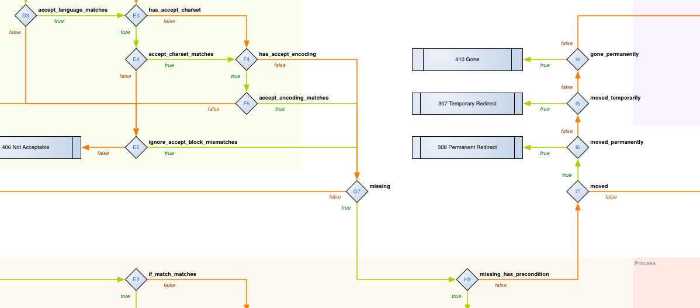
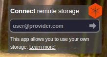

Clojure, Web и золото
Старатели против карьеров
Дмитрий Грошев (@lambdadmitry)
Проприетарный софт
Open Source
Clojure
Старые шахты
(defroutes user-routes
(context "/user/:id{[0-9]+}" []
(GET "/" [] ...)
(GET "/profile" [] ...)
(GET "/posts" [] ...)))Золото!
hiccup
(defn foobar [...]
[:div.top.container
[:a {:href "/"}
[:img {:src "/img/logo_small.png"
:border "0"}]]
[:div.links
(if is-authorized?
[:a {:href "/logout"} "Выйти"]
[:a {:href "/login"} "Войти в аккаунт"])]
[:div.clear]])Graph
(def stats-graph
{:n (fnk [xs] (count xs))
:m (fnk [xs n] (/ (sum identity xs) n))
:m2 (fnk [xs n] (/ (sum #(* % %) xs) n))
:v (fnk [m m2] (- m2 (* m m)))})fnhouse
(defnk $entries$:entry-id$GET
"Get the entry at the given id"
{:responses {200 schemas/ClientEntry}}
[[:request [:uri-args entry-id :- Long]]
[:resources guestbook]]
{:body (safe-get @guestbook entry-id)})fnhouse
(p/defnk post
"Adds new foobar"
{:responses {201 s/Any
422 {:message s/Str}}
:path "/"
:method :post
:auth-scope :auth-scopes/foobar-add}
[[:request datomic-val oauth-token
body :- (msext/fresh msext/Foobar)]
[:resources datomic]]
(let [foobar (adapter body)
uuid (:foobar/uuid foobar)
entity-url (mh/handler-var->url #'get-entity {:uuid uuid})]
(case (md/assert-entity datomic foobar oauth-token)
...
:not-an-entity
{:status 422 :body {:message "reference consistency violation"}})))Завтра?
for-GET
Remote storage

TODO:
копать много и глубоко
Вопросы?
Слайды: si14.github.io/sprug-2015-01-slides
Твиттер: @lambdadmitry
Почта: lambdadmitry@gmail.com